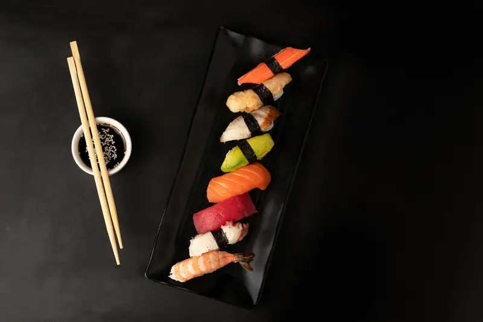
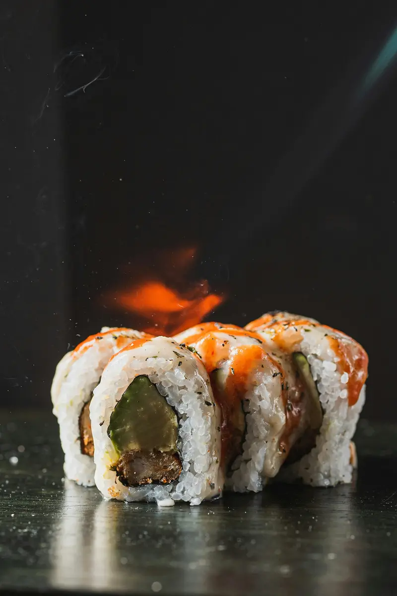
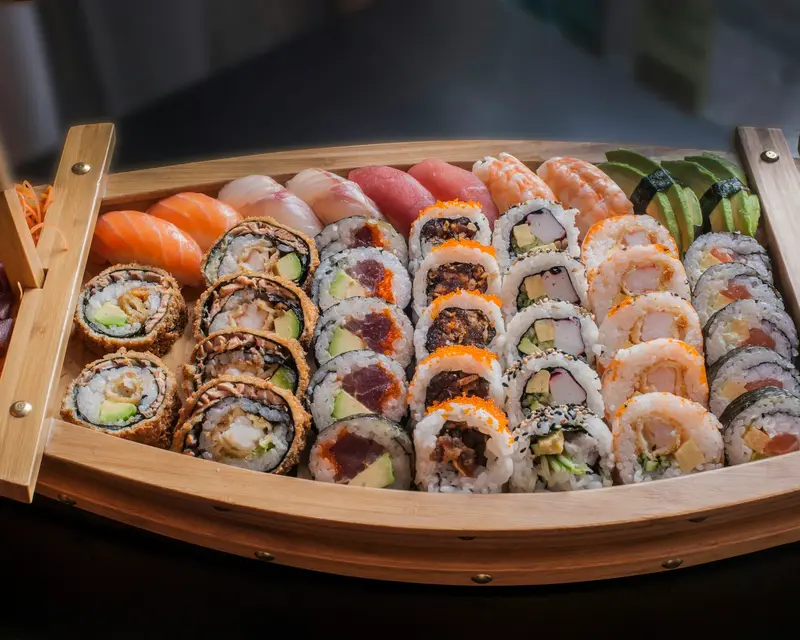
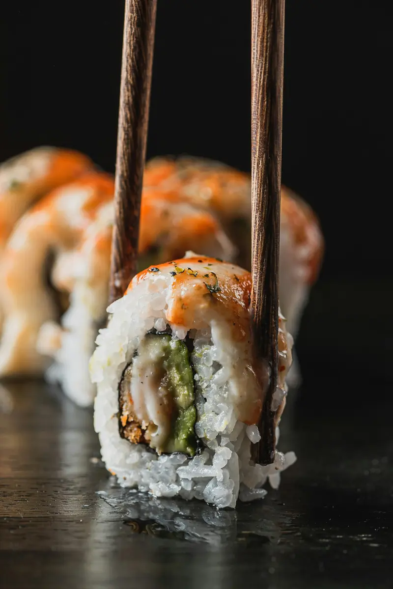
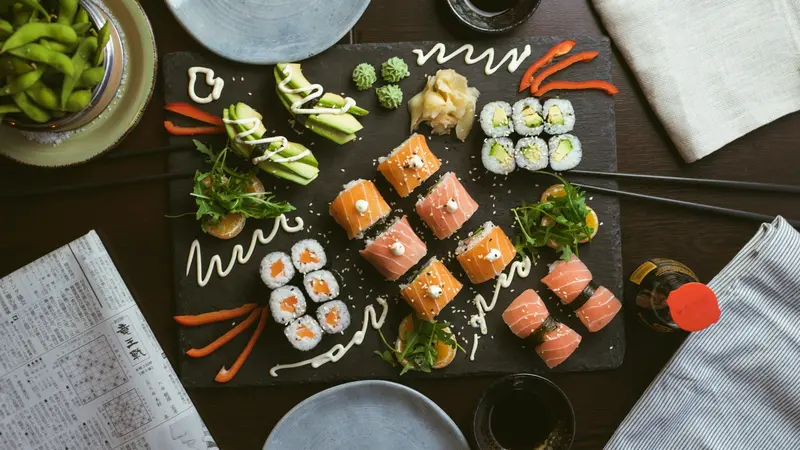

Corte preciso, arroz morno.
Peixe que chega cedo, arroz temperado na casa e um balcão de oito lugares onde o itamae decide o que vem a seguir.
O que sai da tábua
Carta curta, que muda com o mar. Os preços são de exemplo: ajuste no arquivo antes de publicar.

Combinados
- Combinado Nori20 peças · nigiri, uramaki e hossomaki do diaR$ 129
- Combinado do chef30 peças · inclui aburi e gunkan de ovasR$ 189
- Só salmão16 peças · sashimi, nigiri e uramaki skinR$ 92
- Vegetariano14 peças · shiitake, pepino, manga e shisoR$ 68
- Barca para dois40 peças · o melhor da casa num só pedidoR$ 239
Sashimi
- Salmão8 fatias · corte grosso, servido com wasabi frescoR$ 64
- Atum6 fatias · akami ou toro, conforme a entregaR$ 78
- Peixe branco do dia6 fatias · com ponzu e raspas de limãoR$ 69
- Polvo6 fatias · cozido lentamente, com sal grossoR$ 72
- Trio da casa12 fatias · salmão, atum e peixe brancoR$ 112
Temaki
- Salmão com cebolinhaalga crocante, montado na horaR$ 38
- Skinpele de salmão tostada e molho tarêR$ 34
- Atum picanteatum picado, pimenta e gergelimR$ 44
- Camarão empanadocamarão no panko, maionese de missôR$ 42
- Vegetarianopepino, manga, cenoura e shisoR$ 29
Quentes
- Gyoza de porco6 unidades · selado na chapaR$ 39
- Missoshirucaldo de missô, tofu e cebolinhaR$ 16
- Lula na chapamanteiga, shoyu e limãoR$ 58
- Salmão na robatagrelhado na brasa com tarê da casaR$ 74
- Arroz frito com shimejiovo, cebolinha e óleo de gergelimR$ 46
Preços e pratos de exemplo. Consulte alergênicos com a equipe.
Você senta.
O chef escolhe.
Omakase quer dizer “deixo com você”. São 14 tempos servidos peça por peça, na mão, no ritmo da conversa.

- 01–02Entradas frias da estação
- 03–04Sashimi do dia, cortado na sua frente
- 05–12Oito nigiris, do peixe mais leve ao mais gordo
- 13Temaki do chef, entregue na mão
- 14Sobremesa e chá verde
De terça a sábado. Avise restrições alimentares na reserva.
O balcão vai até você.
Montamos na hora do pedido, nunca antes. Arroz e peixe viajam separados do molho, para chegar como saíram da tábua.
- 40–55 mintempo médio de entrega
- 6 kmde raio a partir da casa
- 18h30começamos a aceitar pedidos


“Sushi é arroz. O peixe é a parte que todo mundo vê.”
Chef Rafael Sato · itamae e sócio (personagem fictício)
O Nori começou em 2016 com um balcão de oito lugares e nenhuma pressa. Rafael aprendeu o ofício em casas de Liberdade e Osaka e trouxe de volta uma regra simples: o arroz é temperado três vezes por noite e sai sempre na temperatura do corpo.
O peixe chega de manhã cedo, de fornecedores que a gente conhece pelo nome. O que não está bom no dia, não entra no cardápio.
- 0lugares no balcão
- 0×arroz temperado por noite
- 0°temperatura do shari
Uma noite no Nori
Algumas fotos para dar fome. Troque pelas da sua casa.



Uma carta curta de sakês, servidos gelados ou mornos, para acompanhar cada tempo.
12 rótulosQuem senta, volta.
Depoimentos fictícios para mostrar o modelo. Troque pelos dos seus clientes antes de publicar.
“Fiz o omakase no aniversário de casamento. O chef lembrou do nosso nome até a sobremesa.”
“O delivery chega com o arroz soltinho e o molho à parte. Parece que acabou de sair do balcão.”
“O nigiri de peixe branco com raspas de limão é motivo suficiente para atravessar a cidade.”
A luz vermelha
fica acesa.
- Endereço
- Rua Exemplo, 000 · Vila Madalena, São Paulo · SP
- Contato
- (11) 90000-0000 · @nori.sushibar
- SegundaFechado
- Terça a quinta18h30 – 23h30
- Sexta18h30 – 00h30
- Sábado12h – 16h · 18h30 – 00h30
- Domingo12h – 17h